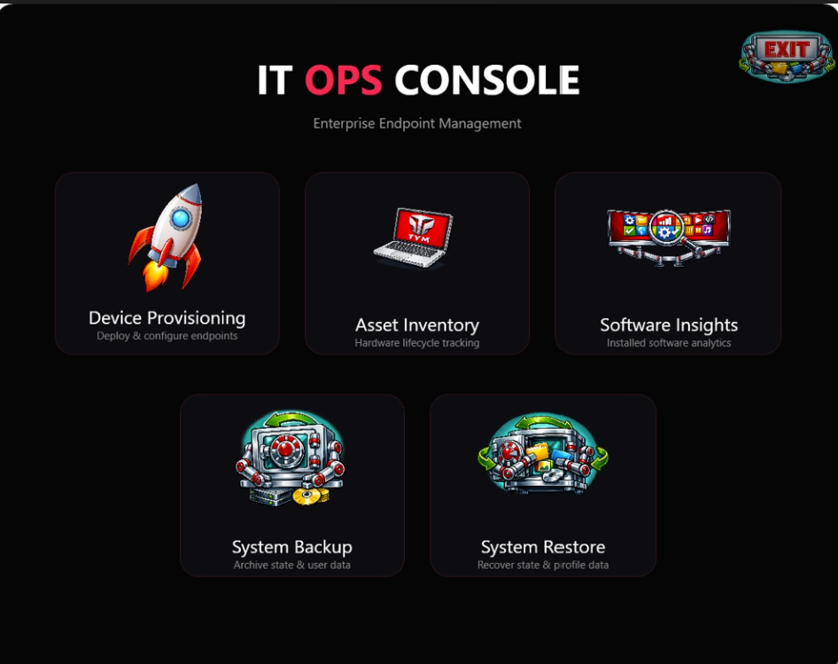

Engineering Framework
The AI-Co-Pilot Delivery Model
Syntax generation has become a commodity, but syntax lacks operational and architectural context. Across the development of these proprietary utilities, I acted as the System Director—providing the real-world operational context, defining mathematical constraints, engineering path resolutions, and conducting direct prompt steering while utilizing AI engines to rapidly instantiate optimized underlying code blocks.
Distributed System Topology Matrix
[ IT-Ops-Console.exe ] <-- Compiled WPF/XAML Master Orchestration Shell
│
├───► [ PC Onboarding Module ] ──► Endpoint Provisioning Scripts
├───► [ Software Inventory Builder ] ──► Application Analytics Engines
├───► [ Backup-All Engine ] ──► SHA-256 Cryptographic Delta Sync
└───► [ IT Asset Manager v13.4 ] ──► WinForms Data Management Studio
│
└──► [ Inventory.db ] (SQLite)
Core Process Launcher
IT Ops Console Orchestrator
Engineered to wrap modular administration layers into a centralized, compiled binary executable (`.exe`). This bootstrap shell provides an immersive graphical control center that completely eliminates client-side directory mapping, environmental path breakages, and native execution policy warnings for tier-1 operators.
Key AI-Steered Breakthroughs:
- Win32 P/Invoke Interceptions: Managed explicit inline C# assembly calls directly inside the script runtime to bind kernel-level hooks (`ShowWindow`/`PostMessage`), entirely suppressing the legacy command line flash artifact on launch.
- WPF/XAML UI Layout Triggers: Designed an immersive `#050505` dark-mode interface utilizing explicit XML templates to execute fine border card glows, modern typography formatting, and responsive mouse-hover scaling changes straight inside the Windows OS compositor thread.
- Non-Blocking Caching Pipelines: Overrode resource handler hooks via `BitmapCacheOption::OnLoad` memory buffering, completely isolating image rendering to allow on-the-fly media drive removal without file handle collisions.

Figure 1: Production view of the compiled IT Ops Console UI shell, displaying custom application identity assets steered via automated asset matrices.

Figure 2: Active inventory management panel with synchronized WinForms layout controls.
Data Management Plane
IT Asset Manager (v13.4 Golden UI)
Designed to replace an erratic, single-user Excel spreadsheet tracker with an embedded, zero-footprint relational database. The solution queries hardware parameters instantly via portable channels and maps environmental deployment metrics.
Key AI-Steered Breakthroughs:
- Relational SQLite Transition: Migrated application states to a safe transactional database engine via decoupled `System.Data.SQLite.dll` routing paths, delivering sub-millisecond querying capabilities without installation dependencies.
- Regex Age Profiling: Built automated lifecycle heuristics using regular expression parsing blocks to scan system strings, extracting processor and vendor details to establish precise device age brackets.
- Presentation Polymorphism: Programmed a layout mapping abstraction block that reuses legacy data columns to capture hardware specifications based on user contexts, eliminating destructive schema modifications.
Infrastructure Protection Layer
Cryptographic Multi-Folder Smart Backup Pipeline
A state-aware background utility designed to secure active script modifications, database configurations, and operational logs across moving deployment media. Optimizes write speeds and reduces storage footprint via advanced evaluation gates.
Atomic File Management
Bypassed legacy execution limits by implementing direct .NET `FileStream` memory allocations. Utilizing programmatic `FileShare::ReadWrite` properties allows the runner to duplicate active configuration assets right through active system locks without throwing exceptions.
SHA-256 State Tracking
Built a cryptographic verification step mapping asset footprints into low-level hash tables. Checks active code states against an external tracking ledger (`hashlist.json`) to run differential snaps, moving only altered streams.
The Silent Intercept Block
Programmed an unmapped asset recovery thread isolated completely from human selection checkboxes. Detects operational game folders, transferring files into compressed, masked directories (`\SystemData\.assets`) under standard jargon messages.